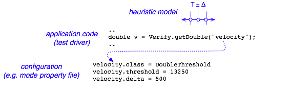

Ideally, JPF can be used to verify arbitrary Java applications, but often, these applications are Java models of other systems. In this case, it can be helpful to call JPF APIs from within the application, to obtain information from JPF or direct its further execution. The JPF API is centralized in the gov.nasa.jpf.jvm.Verify class, which includes methods from the following major categories:
(1) Non-deterministic data choice generators are about to become the major API category, which is suitable for writing test drivers that are model checker aware. The idea is to obtain non-deterministic input data values from JPF in a way that it can systematically analyze all relevant choices. In its most simple form, this can be used like
// test driver code import gov.nasa.jpf.jvm.Verify; .. boolean cond = Verify.getBoolean(); // following code is executed for both cond=true AND cond=false ..
But non-deterministic choice generators don't stop at value sets that can be completely enumerated based on their type (like boolean, and - at least theoretically - integers). JPF also supports configured heuristics based choice generators, where the values sets are application dependent and can be specified in property files.

Figure 1: choice generators
Heuristic choice generator implementation is described in a separate section of this documentation.
(2) Search pruning is useful for highly application specific properties, where it is obvious that certain values are not of interest with respect to the property.
// ..compute some data.. Verify.ignoreIf(data > someValue); // prune search if true // ..do some stuff with data..
If the provided expression evaluates to true, JPF does not continue to execute the current path, and backtracks to the previous non-deterministic choice point.
(3) State annotation - based on certain value combinations, an application might give JPF hints about the relevance of a program state that can be subsequently used by Search and/or Heuristic implementations.
// ..compute some data Verify.interesting( data < someValue ); // ..do some stuff with data
This does not stop execution by JPF, but stores an 'interesting' attribute for the current state. Its more general version is used to attach arbitrary strings to states:
// ..compute some data if (data < someValue) { Verify.setAnnotation("critical data value"); // ..do some stuff with dat
Again, this category is about to become less important since Search- and VMListeners are superior mechanisms to store not just strings, but arbitrary objects as state annotations.
(4) Verification log output - this is the most simple category, which is used to differentiate between normal program output (that is executed and analyzed by JPF), and output that is strictly verification relevant, i.e. should not appear when executing a program outside JPF. Not very surprising, it contains a number of print(..) methods.
(5) Explicit atomicity control - this category can be used to control the number of thread interleavings JPF has to analyze. While this is problematic in terms of missing potential defects, it is was often the only way to constrain the state space so that JPF could verify a given application.
Verify.beginAtomic(); ... // all code in here is executed by JPF in one transition ... Verify.endAtomic();
Direct atomicity control was mainly used before the automatic, on-the-fly partial order reduction (POR) was implemented, and only remains relevant for applications that are (still) problematic with respect to POR. This especially includes frequent access to reachable, but not visible fields in concurrent programs (i.e. there is a reference chain that makes the object reachable from different threads, but the corresponding fields are private or protected, hence not visible for all threads). In general, the role of explicit atomicity control will be further reduced by future POR extensions, and might in fact be dropped in future releases.
JPF's on-the-fly POR implementation is described in a separate section of this documentation.
(6) Other, more exotic Verify methods support collecting information during JPF execution, which is persistent and can be later-on queried by JPF embedding code (programs that execute JPF). This uses an MJI trick where the native peer class (JPF_gov_nasa_jpf_jvm_Verify) is used to set some data during JPF execution, which can be later-on retrieved by model class (gov.nasa.jpf.jvm.Verify) code that is executed outside of JPF. This is currently used to implement counters, which in turn are used to verify JPF itself.
It should be noted that while most of the Verify APIs have alternative implementations that enable execution outside of JPF, applications using them at least don't build outside the JPF environment. Their use therefore is only recommended for JPF specific test drivers.